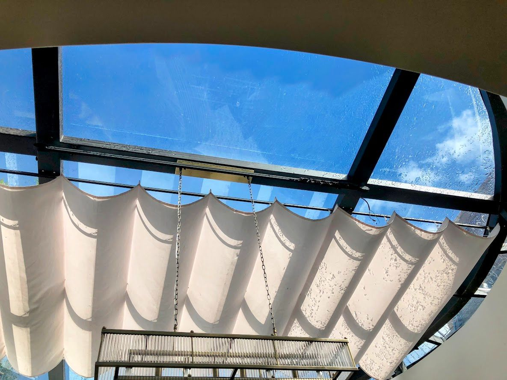

En Resumen: Claves de Elección rápida
- Para Aislamiento Térmico y Ahorro en Aire Acondicionado: El PVC Kömmerling es el ganador indiscutible gracias a su nula conductividad térmica (k ≈ 0.16 W/mK). Recorta sustancialmente la transferencia de calor en zonas cálidas como San Pedro Sula.
- Para Zonas Costeras (Roatán, La Ceiba, Trujillo): El uPVC no se sulfata ni corroe jamás frente a la brisa marina cargada de salitre.
- Para Grandes Formatos Minimalistas de Piso a Techo: El Aluminio Eurovent permite perfiles ultra delgados con alta resistencia mecánica estructural para soportar enormes paños de cristal.
- Para Insonorización Urbana (Tegucigalpa / SPS): El sistema de PVC con doble acristalamiento DVH de 24mm atenúa el ruido exterior hasta en 45 dB.

Al planificar una obra residencial o comercial en Honduras, la elección del sistema de ventanaría representa una decisión estratégica que impacta durante décadas la apariencia, la privacidad y la eficiencia energética del edificio. Las variaciones climáticas extremas del país —desde las altas temperaturas y humedad constante de San Pedro Sula, hasta los vientos de montaña en Tegucigalpa y la alta salinidad de Roatán— exigen seleccionar perfiles y cristalería diseñados para tolerar estas condiciones sin degradarse.
1. Ventanas de PVC Termoacústico (Sistema Alemán Kömmerling)
El uPVC (Policloruro de Vinilo no plastificado de alta densidad) con estabilizadores ecológicos Greenline® se ha consolidado como el estándar de oro europeo para aislamiento arquitectónico. A diferencia de los materiales metálicos, el PVC es un aislante natural por naturaleza.

Ventajas Principales del PVC en Honduras:
- Aislamiento Térmico Extraordinario: Las cámaras internas de aire en los perfiles Kömmerling detienen la transferencia directa del calor radiante solar. Esto mantiene los ambientes interiores frescos y reduce el consumo de energía eléctrica de los aires acondicionados hasta en un 35%.
- Resistencia Inmune al Salitre y la Humedad: En zonas insulares como Roatán o costeras como La Ceiba, el aluminio convencional no protegido tiende a oxidarse y picarse con el tiempo. El PVC es 100% inmune a la corrosión marítima.
- Mantenimiento Cero: No requiere repintado, barnizado ni tratamientos anticorrosivos. Limpieza sencilla con agua y jabón neutro.
- Esquinas Electrosoldadas Herméticas: A diferencia de las ventanas ensambladas con tornillos, las uniones de las esquinas en PVC se fucionan térmicamente, impidiendo filtraciones de agua de lluvia durante tormentas tropicales.
2. Ventanas de Aluminio de Alta Gama (Línea Eurovent)
El aluminio arquitectónico extrusionado de alta resistencia es apreciado mundialmente por la arquitectura contemporánea debido a su rigidez estructural y su versatilidad estética de líneas delgadas.

Ventajas Principales del Aluminio Eurovent:
- Formatos Gigantescos Minimalistas: Permite fabricar hojas corredizas de gran altura y anchura manteniendo perfiles muy esbeltos para maximizar la entrada de luz natural.
- Acabados Anodizados y Pintura Electrostática: Gran variedad de tonos mates como Gris Antracita (#383b3d), Negro Mate (#2a2a2a), Bronce e incluso acabados amaderados por sublimación.
- Resistencia a Cargas de Viento: Excelente rigidez estática ante presiones de viento en edificios de altura elevada o crestas de montañas en Tegucigalpa.
3. Cuadro Comparativo de Ingeniería: PVC vs Aluminio
A continuación se detallan las métricas técnicas comparativas entre ambos sistemas para facilitar la toma de decisiones en tu proyecto:
| Criterio Técnico | PVC Kömmerling (uPVC) | Aluminio Eurovent |
|---|---|---|
| Aislamiento Térmico (U-Value) | ★★★★★ Excelente (0.16 W/mK) | ★★★☆ Moderado (Conductor natural) |
| Insonorización Acústica (dB) | Hasta 45 dB de atenuación | Hasta 32 dB de atenuación |
| Resistencia Marina / Salitre | 100% Inmune (Ideal Roatán) | Requiere Anodizado Especial |
| Estética de Perfil | Robusto / Robusto Elegante | Ultra Delgado / Minimalista |
| Mantenimiento Requerido | Nulo (Solo limpieza simple) | Bajo (Revisión de felpas/sellos) |
| Vida Útil Estimada | Más de 50 años | Más de 40 años |
4. Aislamiento Acústico Urbana: El Rol del Vidrio Doble Hermético (DVH)
En arterias de alto tráfico en Tegucigalpa y San Pedro Sula, la contaminación acústica interrumpe el descanso y el rendimiento laboral. El marco de PVC combinado con un vidrio doble hermético (DVH de 24mm con cámara de gas Argón) actúa como una barrera aislante infranqueable contra ruidos de motores, bocinas y construcciones aledañas.

5. Cortinas Motorizadas: Control Solar e Integración Smart Home
Para fachadas orientadas al poniente u oriente que reciben alta radiación solar directa, la ventanaría se complementa idealmente con cortinas motorizadas de control solar. Las telas Screen con aperturas del 1% al 5% filtran los rayos UV y el encandilamiento sin perder la vista hacia el exterior, logrando equilibrar la temperatura ambiente en salones y oficinas.

Conclusión: Nuestra Recomendación Según la Ubicación de tu Obra
- San Pedro Sula y Zonas Cálidas: Recomendamos PVC Kömmerling para reducir el impacto térmico y minimizar la factura del aire acondicionado.
- Roatán y Zonas Costeras: El PVC es imprescindible por su resistencia absoluta a la brisa marina.
- Tegucigalpa Residencial & Oficinas: Se puede combinar Aluminio Eurovent en fachadas principales de gran ventana y PVC Kömmerling en dormitorios que exijan máxima insonorización nocturna.
¿Deseas Asesoría Personalizada para tus Planos?
El equipo de ingenieros de Design Solutions By Ventanales revisa tus medidas, requerimientos acústicos y plano arquitectónico para brindarte un presupuesto detallado sin costo.
Solicitar Asesoría & Cotización